Unless noted otherwise, every result above uses unit stride (incx = incy = 1) — the normal case, and the coalesced, best-case GPU access pattern. Real usage sometimes passes a non-unit stride (e.g. operating on a row or column of a larger matrix, where incx = lda), which breaks memory coalescing and costs measurably more. This section sweeps a few representative strides to characterize that cost separately, collapsed below by default — expand a stride to see its table and chart.
stride.dgemv.c — CUDA / cuBLAS stride-sweep reference script
Transpose sweep
Unless noted otherwise, every result above uses trans = "no-transpose". trans = "transpose"'s parallelism is bounded by n (one workgroup per output-column tile) rather than m, so it's slower at matched square shapes and substantially slower on tall-narrow shapes — this section sweeps every (m, n) pair for both trans values to characterize that shape sensitivity, not just a single square-shape A/B. Collapsed by default since it's 18 shape combinations — expand a trans value, then a shape, to see its table and chart.
trans.dgemv.c — CUDA / cuBLAS trans-sweep reference script
Lda sweep
Unless noted otherwise, every result above uses a tight lda (no padding). Padding the row stride changes throughput here — the exact mechanism and shape of that effect is routine-specific — collapsed below by default, expand a pad value to see its table and chart.
lda.dgemv.c — CUDA / cuBLAS lda-sweep reference script
alpha sweep
alpha is a plain multiplier here: the kernel applies it unconditionally, with no branch for any particular value. A flat sweep is therefore the expected result and is recorded as a measured null. Levels include 0, 1 and a denormal-producing 1e-38 because those are the values a shader could special-case if it ever grew a branch — and strsm is the routine where one does.
alpha.dgemv.c — CUDA / cuBLAS alpha-sweep reference script
beta sweep
beta scales the existing y/C before accumulation. Reference BLAS is permitted to skip reading that operand entirely when beta is 0, so unlike alpha this sweep has a mechanism to be non-flat — a step at 0 means the shortcut is taken, and its size is what it saves.
beta.dgemv.c — CUDA / cuBLAS beta-sweep reference script
layout sweep
Column-major swaps the effective m/n and flips the transpose flag internally, changing which axis is contiguous and therefore how the matrix reads coalesce. wgblas-only: cuBLAS is column-major and has no layout argument, so there is no reference curve to compare against.
Benchmark results for dgemv on Nvidia Geforce Gtx 1650.
Nvidia Geforce Gtx 1650 — wgblas vs cuBLAS
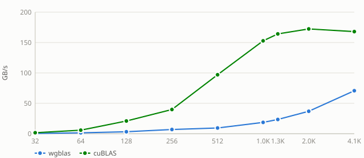
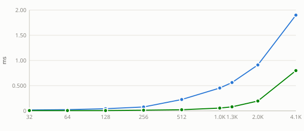
See also
Stride sweep
Unless noted otherwise, every result above uses unit stride (
incx = incy = 1) — the normal case, and the coalesced, best-case GPU access pattern. Real usage sometimes passes a non-unit stride (e.g. operating on a row or column of a larger matrix, whereincx = lda), which breaks memory coalescing and costs measurably more. This section sweeps a few representative strides to characterize that cost separately, collapsed below by default — expand a stride to see its table and chart.Nvidia Geforce Gtx 1650 — stride = 4
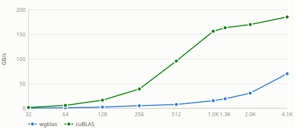
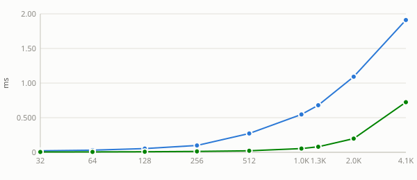
Nvidia Geforce Gtx 1650 — stride = 5
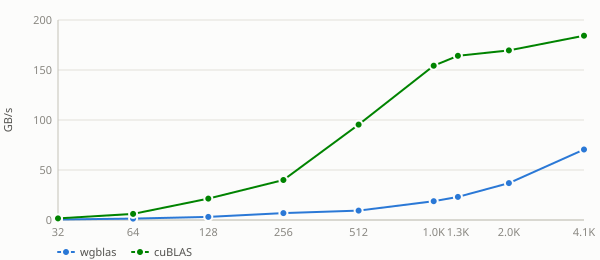
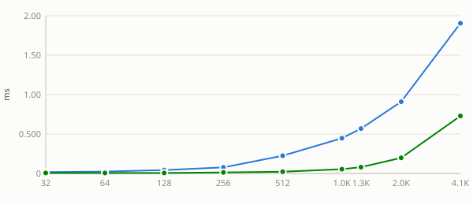
Nvidia Geforce Gtx 1650 — stride = 32
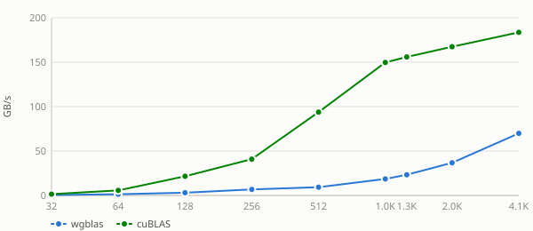
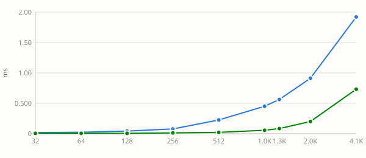
Nvidia Geforce Gtx 1650 — stride = 33
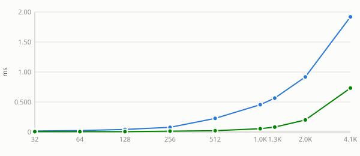
Nvidia Geforce Gtx 1650 — stride = 255
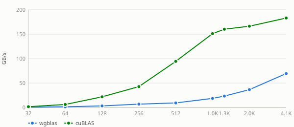
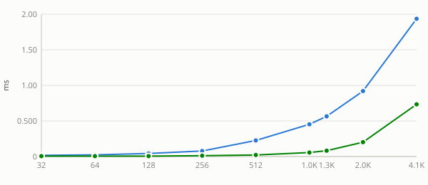
Nvidia Geforce Gtx 1650 — stride = 256
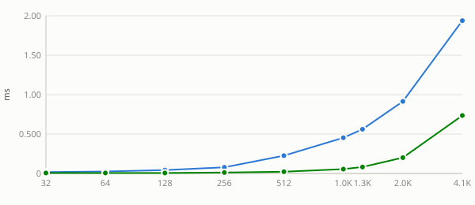
See also:
Transpose sweep
Unless noted otherwise, every result above uses
trans = "no-transpose".trans = "transpose"'s parallelism is bounded byn(one workgroup per output-column tile) rather thanm, so it's slower at matched square shapes and substantially slower on tall-narrow shapes — this section sweeps every(m, n)pair for bothtransvalues to characterize that shape sensitivity, not just a single square-shape A/B. Collapsed by default since it's 18 shape combinations — expand atransvalue, then a shape, to see its table and chart.Nvidia Geforce Gtx 1650 — trans = no-transpose (9 shapes)
m = 32
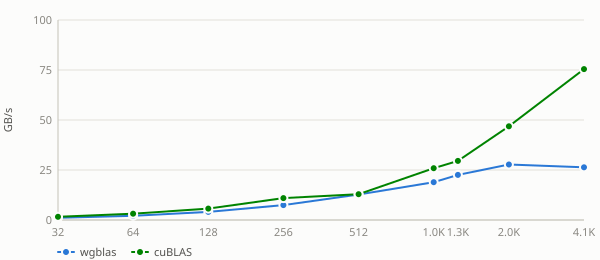
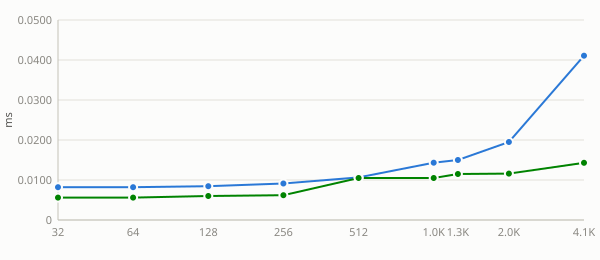
m = 64
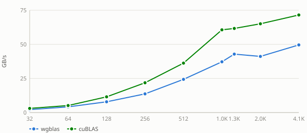
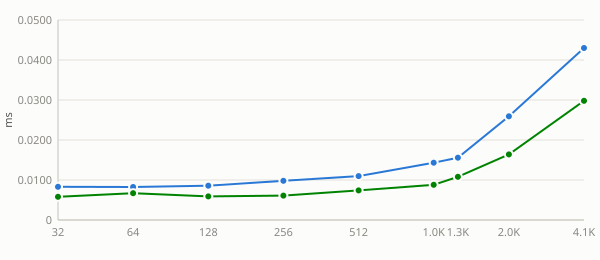
m = 128
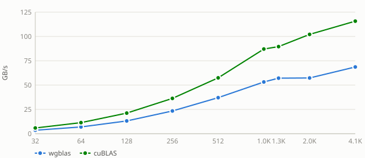
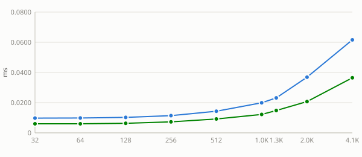
m = 256
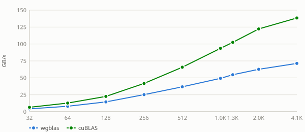
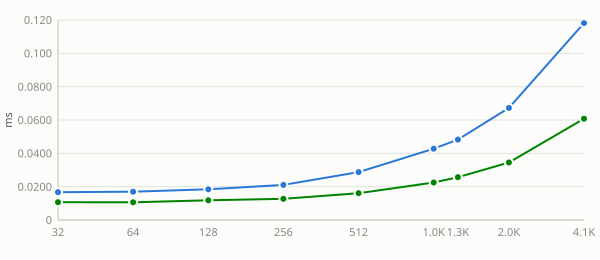
m = 512
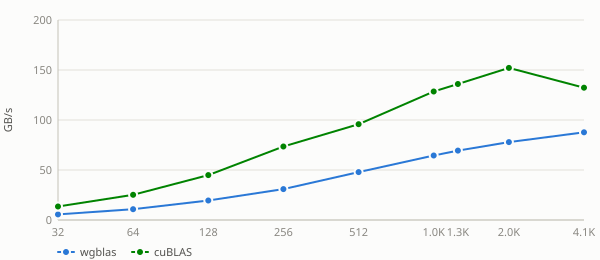
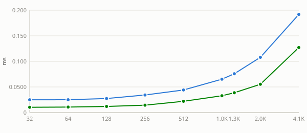
m = 1024
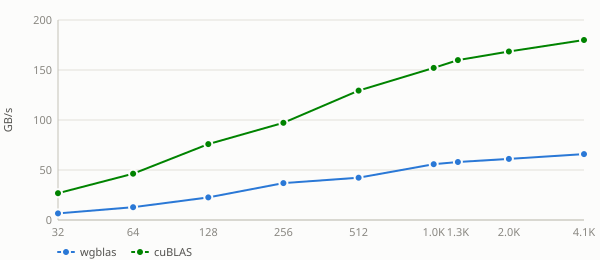
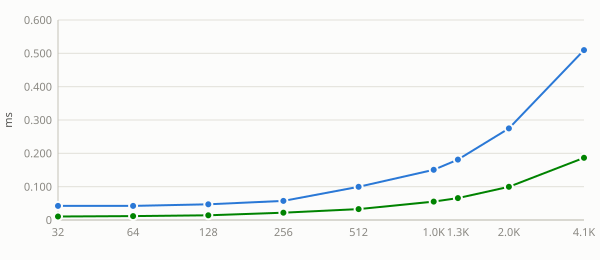
m = 1280
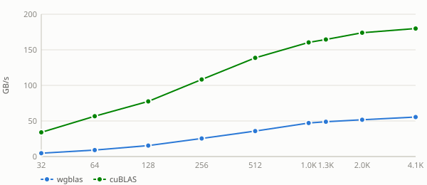
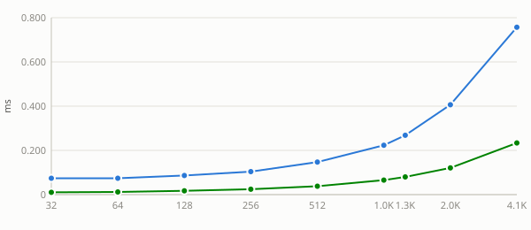
m = 2048
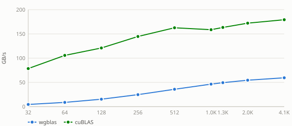
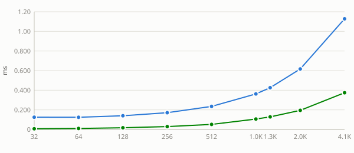
m = 4096
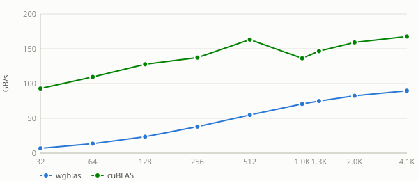
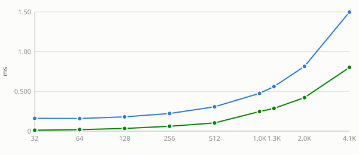
Nvidia Geforce Gtx 1650 — trans = transpose (9 shapes)
m = 32
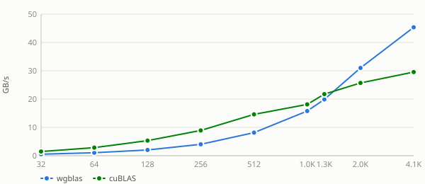
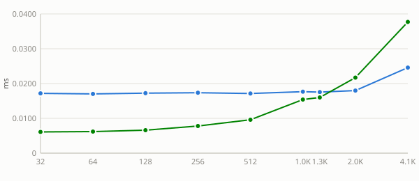
m = 64
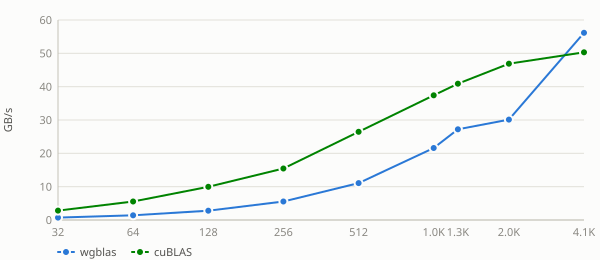
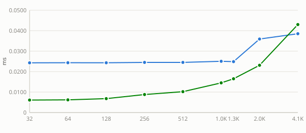
m = 128
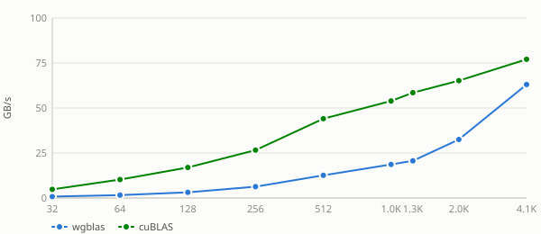
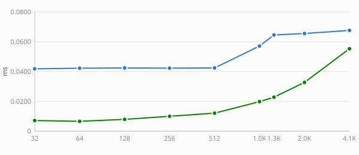
m = 256
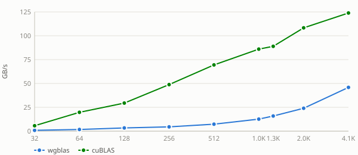
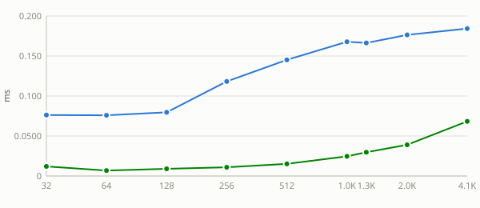
m = 512
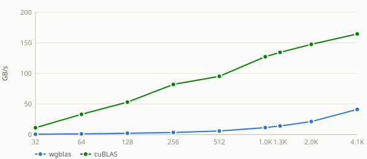
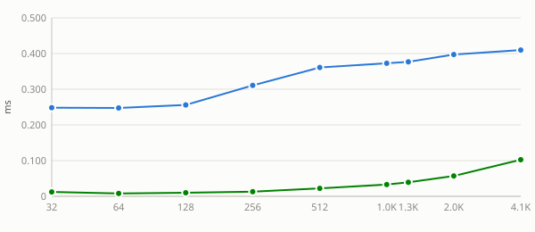
m = 1024
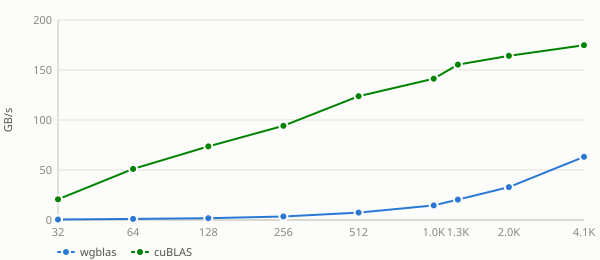
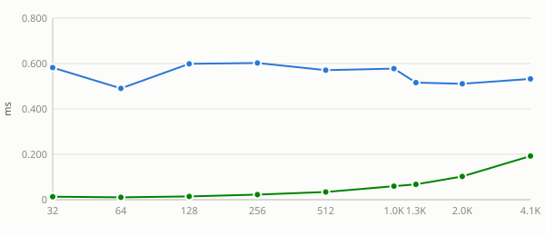
m = 1280
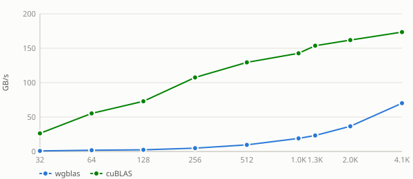
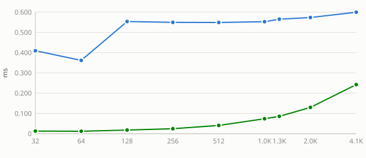
m = 2048
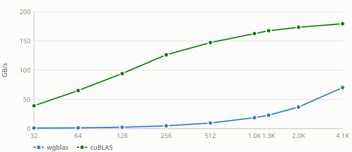
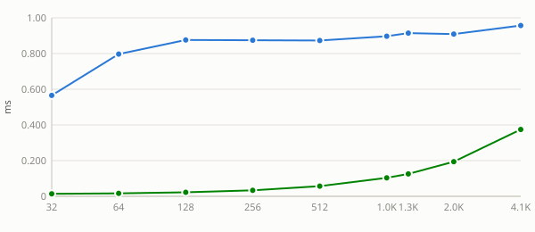
m = 4096
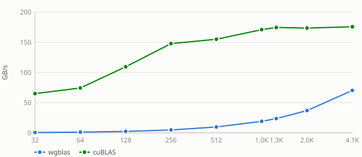
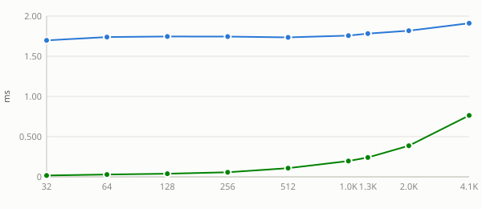
See also:
Lda sweep
Unless noted otherwise, every result above uses a tight
lda(no padding). Padding the row stride changes throughput here — the exact mechanism and shape of that effect is routine-specific — collapsed below by default, expand apadvalue to see its table and chart.Nvidia Geforce Gtx 1650 — pad = 0
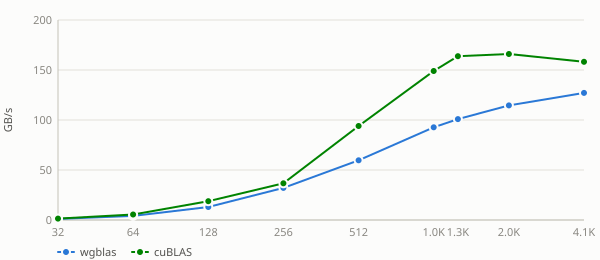
Nvidia Geforce Gtx 1650 — pad = 1
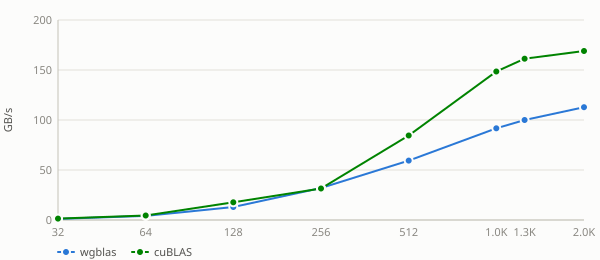
Nvidia Geforce Gtx 1650 — pad = 8
Nvidia Geforce Gtx 1650 — pad = 16
Nvidia Geforce Gtx 1650 — pad = 32
Nvidia Geforce Gtx 1650 — pad = 48
Nvidia Geforce Gtx 1650 — pad = 64
Nvidia Geforce Gtx 1650 — pad = 128
See also:
alpha sweep
alphais a plain multiplier here: the kernel applies it unconditionally, with no branch for any particular value. A flat sweep is therefore the expected result and is recorded as a measured null. Levels include0,1and a denormal-producing1e-38because those are the values a shader could special-case if it ever grew a branch — andstrsmis the routine where one does.Nvidia Geforce Gtx 1650 — alpha = -3.75
Nvidia Geforce Gtx 1650 — alpha = 0
Nvidia Geforce Gtx 1650 — alpha = 1e-38
Nvidia Geforce Gtx 1650 — alpha = 1
Nvidia Geforce Gtx 1650 — alpha = 2.5
See also:
beta sweep
betascales the existingy/Cbefore accumulation. Reference BLAS is permitted to skip reading that operand entirely whenbetais 0, so unlikealphathis sweep has a mechanism to be non-flat — a step at 0 means the shortcut is taken, and its size is what it saves.Nvidia Geforce Gtx 1650 — beta = -3.75
Nvidia Geforce Gtx 1650 — beta = 0
Nvidia Geforce Gtx 1650 — beta = 1
Nvidia Geforce Gtx 1650 — beta = 2.5
See also:
layout sweep
Column-major swaps the effective
m/nand flips the transpose flag internally, changing which axis is contiguous and therefore how the matrix reads coalesce. wgblas-only: cuBLAS is column-major and has no layout argument, so there is no reference curve to compare against.Nvidia Geforce Gtx 1650 — layout = column-major
Nvidia Geforce Gtx 1650 — layout = row-major
See also: